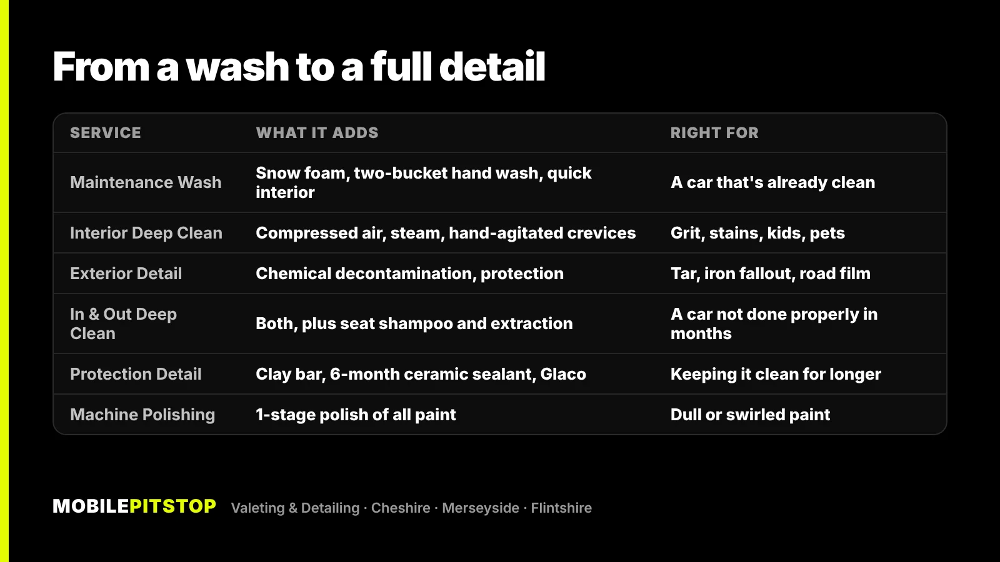
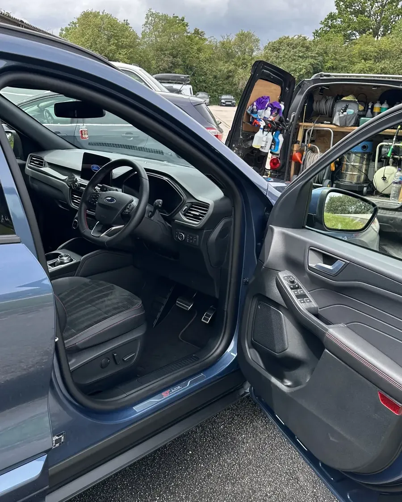
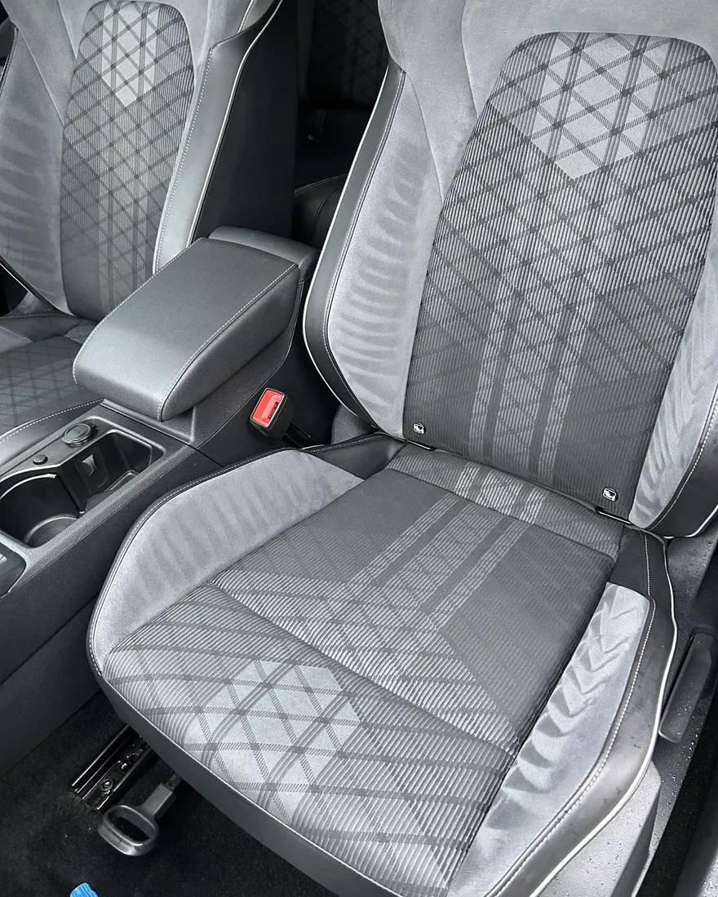

A valet cleans your car. A detail goes further: it removes the contamination a wash leaves behind, deals with the inside properly, and usually finishes with protection on the paint, or polishing to improve it. The simplest way to think about it is a ladder, from a careful wash at the bottom to paint correction and coatings at the top.
The catch is that the words get used loosely. One business's "full valet" is another's "mini detail", so the name on the price list tells you less than the list of steps underneath it. That's why this post explains what each level actually involves, and which one your car needs.
The honest answer for a lot of cars is the cheaper one. If your car is already in good shape, a deep detail every month is money you don't need to spend.
In the UK, a valet normally means a clean, inside and out, aimed at making the car look tidy again. A mini valet is typically a wash, a vacuum and a wipe round. A full valet usually adds more time on the interior, such as seats, carpets and plastics.
Done well, that's worth having. The difference is in the method. A wash that goes straight in with a sponge, or a dry cloth on a dusty car, drags grit across the paint and leaves fine swirl marks. That's why our most basic service, the Maintenance Wash, still starts with a snow foam pre-wash to lift dirt before anything touches the paint, then a two-bucket hand wash with grit guards and a hand dry with plush microfibre. Inside, it's a blow out, a vacuum, the key areas wiped and the glass cleaned inside and out.
What a valet-level clean doesn't do is shift contamination that's bonded to the paint, get into the seat rails and vents properly, or protect anything. For an already-clean car that's fine. For a neglected one it isn't enough.
Detailing is about the parts of the job a wash skips. It covers three things.
Run your fingertips over a freshly washed panel. If it feels rough, that's bonded contamination: tar from the road, iron fallout from brake dust (it shows as orange specks on light colours), and a film of traffic grime. Shampoo doesn't remove it. Chemical decontamination dissolves the tar and iron, and a clay bar lifts what's left so the paint is smooth again.
Grit collects in seat rails, the joins between panels and the vents, where a vacuum nozzle doesn't reach. On our Interior Deep Clean we blow these out with compressed air before vacuuming, steam clean the contact areas and agitate crevices and seams by hand. Plastics are scrubbed back to a natural satin finish rather than coated in a greasy dressing that attracts dust.
Once the paint is genuinely clean, a detail usually finishes with protection: a wax, a sealant or a coating that helps water and dirt run off. If the paint is dull or swirled, it can be machine polished first. Protection seals in whatever is underneath, so polishing has to come before it, not after.

Start with the condition of the car, not the name of the service. As a rough guide:
If you're not sure, send us a few photos in daylight and we'll tell you straight which service the car needs, including when a cheaper one will do.
The bigger services are built from the smaller ones, so nothing gets skipped when you move up a level. Every exterior service starts the same way: snow foam pre-wash, two-bucket hand wash, and wheels, tyres and arches cleaned. After that, the work builds:

Above the ladder sit the paint jobs: machine polishing for dull or swirled paint, ceramic coatings for long-term protection (booked by quote, because the weather is part of the job), and multi-stage paint correction at our unit in Birkenhead for paint you want as close to perfect as possible.

Plenty of cars don't need a detail most of the time. If the car was deep cleaned and protected recently, a careful wash every few weeks keeps it at that standard, and protected paint washes clean more easily. That's what our maintenance plan is for: regular visits at a lower price per visit, so the car never slides back to needing the full reset.
Where it stops being enough: grime that won't wash off, a rough feel to the paint, stains in the seats, or a smell that keeps coming back. Those need the steps a wash doesn't include, and repeated basic cleans won't get there.
It's worth knowing the limits before you book:
If you're thinking about protection before the salt goes down, our post on protecting your car's paint before winter goes through the timing and what you can do yourself.